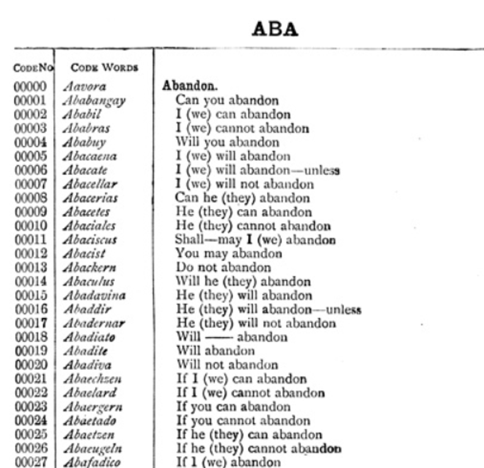

Die Geschichte des Zimmermann-Telegramm 1917
Zimmermann-Depesche (auch Zimmermann-Telegramm genannt), war ein verschlüsseltes Telegramm während dem Ersten Weltkrieg.
Geschichte
Der Zweck des Telegrammes war es, ein Bündnis zwischen Mexiko und dem Deutschen Reich zu bilden, für den Fall, dass die Vereinigten Staaten ihre Neutralität aufgeben würden. Mexikos Regierung würde in diesem Falle Unterstützung für die Rückgewinnung von Territorium erhalten, das sie 1848 an die Vereinigten Staaten verloren hatten. Dies wurde damals in dem «Vertrag von Guadalupe Hidalgo» beschlossen. Dieser Vertrag beendete den Mexikanisch-Amerikanischen Krieg (1846-1848). [22]
Das Telegramm wurde im Januar 1917 von dem deutschen Staatssekretär (des Auswärtigen Amts) Arthur Zimmermann über die deutsche Botschaft in Washington D.C. verschickt, gedacht war es für den deutschen Abgeordneten in Mexiko.
Jedoch wurde das Telegramm vom britischen Marinegeheimdienst abgefangen und anschliessend entziffert. Das Abfangen gelang nur, da Grossbritannien im August 1914 die deutschen Seekabel durchtrennt hatte. Dies zwang Deutschland dazu, das Telegramm über amerikanische und schwedische Kabelstrecken zu senden, die durch Grossbritannien liefen.
Der britische Geheimdienst hielt das Telegramm jedoch über einen Monat zurück, da man nicht wollte, dass das Deutsche Reich wusste, dass der Code geknackt wurde.
Schliesslich wurde es am 1. März 1917 von dem US-amerikanischen Aussenminister bekanntgegeben.
Dies führte unter anderem dazu, dass der Präsident Woodrow Wilson den Kongress um die Kriegserklärung an Deutschland bat. Wie stark die Zimmermann-Depesche Einfluss auf den Kriegseintritt der USA hatte, ist bis heute stark umstritten.
Eines der Hauptargumente ist beispielsweise, dass das Telegramm erst im März veröffentlicht wurde. Jedoch wurde im Januar von dem Deutschen Reich an die USA mitgeteilt, dass sie den uneingeschränkten U-Bootkrieg wieder aufnehmen würden. Dies legt den Schluss nahe, dass das Telegramm nicht als endgültiger Auslöser, sondern eher als eine weitere Rechtfertigung für den Kriegseintritt der USA diente.
Ein weiterer Grund ist die Ablehnung des Bündnisses durch Mexiko. Deswegen wird die «reale politische Bedrohung» oftmals angezweifelt. [23]
Dabei sollte man allerdings nicht vergessen, dass das Telegramm die Regierung der Vereinigten Staaten zur Überdenkung ihrer Neutralitätspolitik veranlasste und ebenfalls dazu führte, dass die US-amerikanische Öffentlichkeit dem Kriegseintritt zustimmte. [23]
Die Entschlüsselung
Während wir heutzutage die Ver- und Entschlüsselung mit Algorithmen durchführen, verwendete man zur Zeit des Ersten Weltkrieges sogenannte Codebücher. * Im Falle der Marine des deutschen Reiches verwendete man das «Signalbuch der Kaiserlichen Marine», auch «SKM» genannt. Diese wurden auf allen Kriegsschiffen mitgeführt und betrafen die Funksprüche der Marine. [24]
Nach der «Schlacht bei Gumbinnen» hatte sich das Deutsche Kaiserreich von der russischen Armee zurückgezogen, hat aber gleichzeitig am Finnischen Meerbusen [25] Stellung bezogen. Während diesen Kriegshandlungen lief ein deutsches Kriegsschiff am 25. August 1914 auf Grund. Nach Reglement sollten alle Codebücher zerstört werden. Entweder indem man sie über Bord warf oder verbrannte. Da in diesem Falle die Wassertiefe zu gering war, sollten sie verbrannt werden. Aufgrund der hektischen Situation wurden jedoch zwei von drei Büchern übersehen und nicht vernichtet. Dies führte dazu, dass sie von russischen Tauchern geborgen wurden. Innerhalb von zwei Wochen konnten erste Funksprüche decodiert werden.
Im Oktober 1914 erhielt der britische Marineminister Winston Churchill ein Exemplar von einem russischen Offizier überreicht. So kam es schlussendlich zur Entschlüsselung des Zimmermann-Telegrammes. [23]
Obwohl die Zimmermann-Depesche nicht mit einem Marinecode, sondern einem diplomatischen Code (Code 7500 bzw. 0075) verschlüsselt wurde, führte der Fund der SKM-Bücher zu dem Durchbruch, der kurz darauf die Entschlüsselung des Diplomatencodes möglich machte.
Am 3. März 1917 bestätigte Zimmermann öffentlich das Telegramm. Damit endete auch die Debatte in den USA über eine mögliche britische Fälschung des Telegramms.
